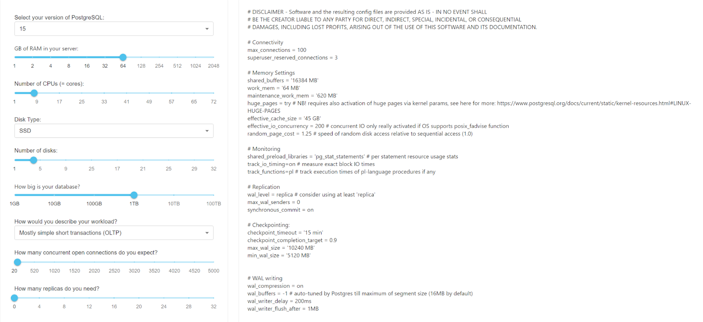
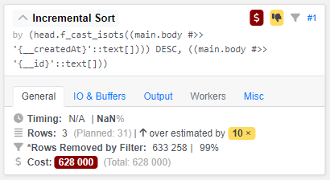

В этой статье рассмотрим методы диагностики производительности PostgreSQL, которая состоит из трёх этапов:
Шаг 1: Оптимизировать кластер
Для улучшения работы вашей базы данных используйте следующие методы диагностики производительности PostgreSQL:
- примените вертикальное или горизонтальное масштабирование и затем проведите анализ запросов;
- настройте конфигурационные параметры развернутого кластера. Например, используйте онлайн генераторы конфигурационных параметров. Подробнее смотрите в сервисе CYBERTEC.
Пример генерации оптимальных настроек для кластера по введённым характеристикам сервера:

Шаг 2: Анализ логов
Обратите внимание, что включение анализаторов запросов может потреблять около 10% ресурсов. Но после завершения процесса анализа и оптимизации запросов производительность может значительно вырасти.
Вы можете использовать встроенные инструменты для анализа производительности PostgreSQL, чтобы идентифицировать узкие места и медленные запросы:
Инструмент «pg_stat_statements»
Это один из наиболее полезных инструментов для анализа производительности в PostgreSQL. Этот модуль позволяет собирать статистику о выполненных SQL-запросах, включая их текст, время выполнения и количество вызовов.
- Чтобы включить
pg_stat_statements, задайте параметр вpostgresql.conf.
shared_preload_libraries = 'pg_stat_statements';
- Перезапустите PostgreSQL и выполните запрос для анализа производительности.
SELECT query, total_time, calls FROM pg_stat_statements ORDER BY total_time DESC LIMIT 10;
Инструмент «pg_stat_kcache»
Это расширение, которое позволяет мониторить состояние кеша операционной системы, используемого базой данных. Инструмент полезен для определения эффективности кеширования и возможных узких мест.
- Чтобы включить
pg_stat_statements, задайте параметр вpostgresql.conf.
shared_preload_libraries = 'pg_stat_kcache'
- Перезапустите PostgreSQL и выполните запросы, чтобы анализировать производительность кеша.
SELECT * FROM pg_stat_kcache; # Запрос общей статистики
SELECT * FROM pg_stat_kcache_buffers; # Статистика по кешу буферов (shared buffers)
SELECT * FROM pg_stat_kcache_files; # Статистика по кешу файлов (file cache)
SELECT * FROM pg_stat_kcache_directories; # Статистика по кешу каталогов (directory cache)
Инструмент «auto_explain»
Это модуль, который автоматически анализирует запросы и отображение плана выполнения для запросов, выполняющихся с долгим временем выполнения.
Чтобы включить auto_explain, задайте параметр в postgresql.conf:
session_preload_libraries = 'auto_explain'
auto_explain.log_min_duration = 1000; ## будут записываться запросы, выполняющиеся более 1000 миллисекунд
auto_explain.log_analyze = true; ## будет записываться вывод команды EXPLAIN ANALYZE
auto_explain.log_buffers = true; ## включение статистики об использовании буферов
Инструмент «log_min_duration_statement»
Это параметр позволяет настроить журналирование запросов, выполнение которых занимает больше времени, чем указано в миллисекундах. Например, чтобы журналировать запросы, выполняющиеся более 1000 миллисекунд, задайте параметр в postgresql.conf:
log_min_duration_statement = 1000; ## Журналирование запросов, выполняющихся более 1000 миллисекунд
Шаг 3: Анализ планов
Оптимизация запросов может быть сложной и часто представляет собой итеративный процесс. Вносите изменения постепенно и измеряйте влияние каждого изменения на производительность запросов. Также рекомендуем протестировать выполненные оптимизации в промежуточной среде, прежде чем применять их к рабочей базе данных. Убедитесь в отсутствии непредвиденных последствий.
План запроса PostgreSQL описывает выполнение SQL-запроса, включая сортировку и фильтрацию, а также использование ресурсов во время выполнения.
Query Text: SELECT (main.body) FROM "head"."tasks" AS main WHERE ("head".f_cast_isots(main.body#>>'{__deletedAt}') IS NULL AND (((main.body#>>'{__item}')::jsonb) = '{"namespace":"service_desk","code":"night_request_handling","id":"018b822c-e7b0-c751-1914-2b698ad2b01d"}'::jsonb) AND ((main.body#>>'{__parentId}')::text) IS NULL) ORDER BY "head".f_cast_isots(main.body#>>'{__createdAt}') DESC, (main.body#>>'{__id}') LIMIT 11 OFFSET 0 |
Разберём различные части плана, указанного в примере выше:
Query Text— анализируемый SQL-запрос. Выбирает данные из таблицы с именемtasksв схемеheadс определенными условиями и упорядочивает результаты;Limit— информация об ожидаемой стоимости запроса и количестве строк, которые он ожидает вернуть. В указанном примере запрос ожидает вернуть 11 строк;Output— перечисление столбцов, которые будут включены в выходные данные запроса:body, вычисляемое выражение и другое вычисляемое выражение;Buffers— показывает применение буферов, количество операций чтения и сколько произошло записей. Определяет общие обращения, чтения и записи;I/O Timings— информация о времени, затраченном на операции чтения и записи;Incremental Sort— операция сортировки, которая является частью выполнения запроса. Определяет критерии сортировки и использование памяти;Index Scan Backward using— основная операция при выполнении запроса. Это сканирование индексаtasks:f___createdAt, которое используется для фильтрации и извлечения строк из таблицыtasksна основе заданных условий. Условия перечислены в разделеFilter, где проверяется наличие определенных значений в данных JSONB и отсутствие значения в поле__parentId.Rows Removed by Filterуказывают, сколько строк было отфильтровано по этим условиям;JIT— информация о JIT-компиляции функций и настройках их оптимизации.
Визуализация плана
Вы можете также проанализировать выполнение SQL-запроса. С помощью визуализации плана вы получите подробную информацию о том, как PostgreSQL выполняет запрос, а также о возможных проблемах производительности. Для этого можно использовать pgAdmin или сторонние сервисы.
Пример визуализации:


Данный ресурс предоставляет рекомендации по оптимизации запросов:

Для улучшения производительности вашей базы данных и быстрого выполнения запросов вы можете добавить индекс на любом этапе диагностики: